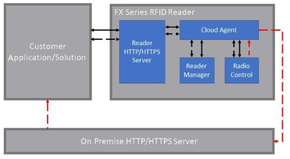

Configuring IoT Connector¶
Zebra IoT Connector can be configured in a variety of deployment modes
Zebra Data Services (ZDS) Deployment¶

The Zebra IoT Connector feature enables the Cloud connectivity to Zebra Data Services. Zebra Data Services is Zebra’s proprietary cloud platform that empowers the user to build secure, scalable digital services with ease and speed. This solution aggregates and analyzes data from multiple edge devices and services, creating data-powered environments to provide real-time guidance and insights. For more information on Zebra Data Services go to: Data Services for RFID
For information on how to enroll the reader with ZDS, please visit here or follow the instructions at Enroll To ZDS.
Other Cloud Support¶
Zebra IoT Connector also enables a configuration to connect with IoT services offered by major public cloud platforms like Google Cloud Platform, Amazon Web Services, IBM Cloud and Azure.
Google Cloud Platform (GCP) IoT Core¶
This feature enables fixed reader to connect with GCP IoT Core service and provides interface to manage, control and stream events from fixed Readers.
For information on how to setup reader to connect with GCP IoT Core, follow the instructions at Connect To GCP.
Amazon Web Services (AWS) IoT Core¶
This feature enables fixed reader to connect with AWS IoT Core service and provides interface to manage, control and stream events from fixed Readers.
For information on how to setup reader to connect with AWS IoT Core, follow the instructions at Connect To AWS.
IBM Watson IoT Platform¶
This feature enables fixed reader to connect with Watson IoT Platform service and provides interface to manage, control and stream events from fixed Readers.
For information on how to setup reader to connect with Watson IoT Platform, follow the instructions at Connect To IBM.
Azure IoT Hub¶
This feature enables fixed reader to connect with Azure IoT Hub service and provides interface to manage, control and stream events from fixed Readers.
For information on how to setup reader to connect with Azure IoT Hub, follow the instructions at Connect To Azure.
Local Deployment¶
The Zebra IoT Connector also enables a configuring in a local private network. In this configuration, the reader is configured to have all the interfaces (Management, Control and Data) exposed locally so that once enrolled, the reader does not have to be connected to the Internet. When configured in this way the Control and Management Interfaces are exposed as REST APIs on the reader via the reader’s webserver. The Data Interface can be configured to be sent via HTTP/HTTPS POST request to a local webserver.
For information on how to enroll the reader for Local Deployment, follow the instructions at Local Deployment.